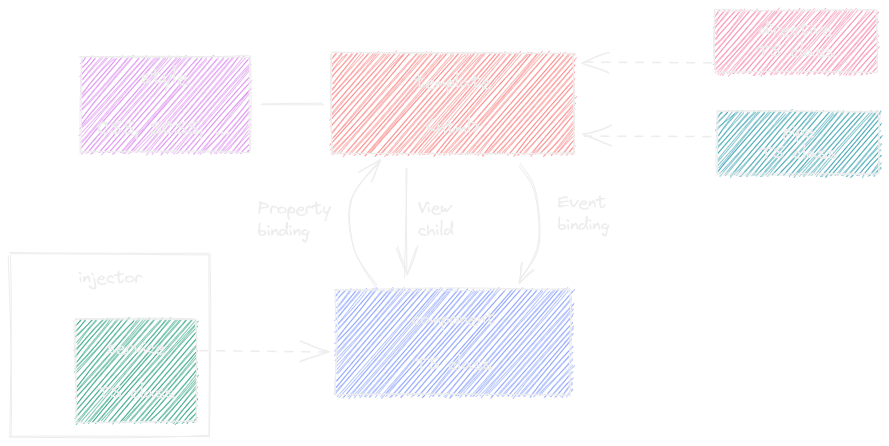
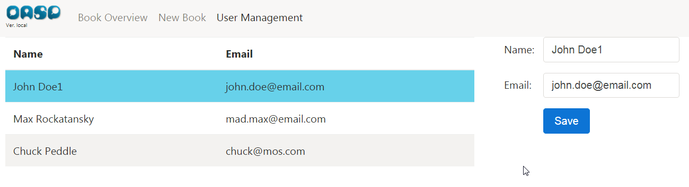
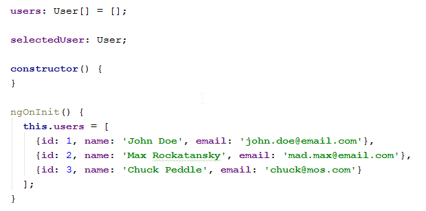

Projekt i implementacja systemów webowych
Wykład 5: Tworzenie aplikacji SPA w Angularze
mgr inż. Maciej Małecki
Architektura aplikacji SPA

Popularne frameworki
Angular: historia
- AngularJS - Google, 2010
- AngularJS: LTS ⇝ 2021-12-31
- Angular 2.0 - Google, 2016
- Brak kompatybilności między Angular i AngularJS
- UWAGA: zwracajcie uwagę na nazwy przeszukując zasoby sieciowe
Angular: architektura
Angular: środowisko developerskie
Node- środowisko uruchomieniowe dla JavaScriptNPM- ang. Node Package Manager - zarządzanie zależnościamiNPM registry- repozytorium bibliotekTypeScript- podstawowy język programowania dla Angular 2.x+Angular CLI- narzędzie linii poleceń wspierające proces tworzenia i budowaniaKarma, Jasmine- środowisko tworzenia testów jednostkowych
Live coding - przykładowa aplikacja
https://github.com/pwr-piisw/angular-wykladNgModule
Moduł funkcjonalny aplikacji - sposób organizacji kodu oraz zależności.
Jest to mechanizm komplementarny do mechanizmu modułów w JavaScript.
Niestety, użyto tej samej nazwy. Dla modułów Angulara używajmy zatem nazwy NgModule.
@NgModule({
imports: [CommonModule],
declarations: [
MyComponent1,
MyComponent2,
MyExternalComponent3],
exports: [MyExternalComponent3]
})
export class MyModule {}
declarations- komponenty składowe.exports- podzbiór komponentów składowych widoczny na "zewnątrz" modułu.imports- lista modułów, których używamy.
Budowa modułu powinna być odzwierciedlona poprzez strukturę katalogów z plikami źródłowymi.
Przykład modułu funkcjonalnego:
ng generate module user-mgmt
ng generate module library-mgmt
Live coding: step1
Component
- Komponent jest podstawową jednostką budowania warstwy wizualnej aplikacji.
- Komponent może być reużyty.
- Komponent komunikuje się ze światem "zewnętrznym" w ściśle określony sposób.
ng generate component user-mgmt/user-list
- template (html) - część wizualna komponentu
- scss - prywatny arkusz styli (opcja)
- component.ts - kod komponentu pełniący funkcję kontrolera
- spec.ts - testy jednostkowe komponentu
Live coding: step2
export const APP_ROUTES: Routes = [{
path: 'app',
children: [
{ path: 'books',
component: BookOverviewComponent },
{ path: 'book',
component: BookDetailsComponent },
{ path: 'book/:bookId',
component: BookDetailsComponent },
{ path: 'users',
component: UserListComponent } ] },
{ path: '',
redirectTo: '/app/books',
pathMatch: 'full' }];Live coding: step3, step4
Routing
Jak działa przeglądarka?
- Wyświetla zawartość w zależności od wartości pola adresowego (URL).
- Przekierowuje użytkownika na inną stronę w wyniku kliknięcia w link.
- Zapamiętuje historię przeglądania oraz umożliwia poruszanie się po niej.
Router jest modułem Angulara, który implementuje podstawowe funkcje przeglądarki (URL, historia) w aplikacjach typu Single-Page.

- Router jest modułem Angulara instalowanym jako osobna zależność.
- Dla każdej aplikacji Angulara potrzebujemy dokładnie jedną instację routera
(singleton,
forRoot). - Router inicjujemy tzw. tablicą przejść (ang. routes).
- Wygodnie jest umieścić tablicę przejść (
import {APP_ROUTES}) w osobnym pliku źródłowym.

router-outlet określa miejsce, w którym Router będzie
"wklejał" nasz komponent.
Live coding: step5
Więcej informacji na https://angular.io/guide/router.
Template
Szablon (ang. template) jest wycinkiem HTML, który definiuje wygląd komponentu.
@Component({
selector: 'app-user-list',
template: `<p>Some fancy component...</p>`,
styleUrls: ['./user-list.component.scss']
})
export class UserListComponent implements OnInit {
@Component({
selector: 'app-user-list',
templateUrl: './user-list.component.html',
styleUrls: ['./user-list.component.scss']
})
export class UserListComponent implements OnInit {
<section class="container-fluid">
<table class="table table-striped">
<thead>
<tr>
<th>Name</th>
<th>Email</th>
</tr>
</thead>
<tbody>
<tr *ngFor="let user of users">
<td>{{user.name}}</td>
<td>{{user.email}}</td>
</tr>
</tbody>
</table>
</section>
DOM model
DOM (Document Object Model) jest to model obiektowy reprezentujący dokument HTML wyświetlany przez przeglądarkę.
Przeglądarka buduje DOM w pamięci za każdym razem, gdy wyświetla HTML.
Każdy skrypt JavaScript (a więc także i każda aplikacja Angular) wchodzi w interakcję z DOM.
Postawowe API elementów DOM:
- atrybut - dodatkowa wartość definiująca tag (w dokumencie HTML).
- właściwość (property) - właściwość obiektu DOM (zwykła właściwość obiektu w JS).
- metoda - funkcja obiektu DOM, którą można wywołać.
- zdarzenie (event) - informacja o zaistnieniu pewnego faktu, np click, focus, blur.
Data binding - wiązanie danych
Data binding są to mechanizmy pozwalające na integrację modelu z widokiem.
Podstawowe rodzaje wiązań:
{{interpolation}}- wyliczy wyrażenie wewnątrz{{}}oraz wstawi wartość.[property_binding]- Angular będzie aktualizował wartość właściwości na podstawie wyrażenia.(event_binding)- wywołana zostanie funkcja w reakcji na zaistnienie zdarzenia.[(two_way_binding)]- synchronizuje model z widokiem "w obie strony".
Live coding: step6, step7, step8, step9, step10, step11
Directive
Dyrektywy to elementy rozszerzające funkcjonalność HTML, które można deklarować za pomocą Angular.
Istnieją trzy rodzaje dyrektyw:
- Komponenty (już je znamy)
- Dyrektywy atrybutowe
- Dyrektywy strukturalne
Dyrektywy atrybutowe
ngModel- wiążą pola edycyjne z modelemngClass- pozwalają dynamicznie modyfikować klasy CSSngStyle- pozwalają dynamicznie modyfikować style CSS
divClasses = {};
...
this.divClasses: {
'valid': this.isValid(),
'highlighted': this.isHighlighted()
}
<div [ngClass]="divClasses">...</div>
W prostszych przypadkach...
<div [class.valid]="isValid()">...</div>
Dyrektywy strukturalne
*ngIf - dodaje/usuwa element z
DOM:
<div *ngIf="isVisible">...</div>*ngfor - iteruje po liście i
dodaje element DOM dla każdego elementu listy:
<div *ngFor="let user of users">{{user.name}} ({{user.email}})</div>ngSwitch, *ngSwitchCase,
*ngSwitchDefault - odpowiednik instrukcji switch/case/default z innych języków
programowania.
Komunikacja międzykomponentowa
Angular pozwala na stosowanie data bindings we własnych komponentach.
Dla danych wejściowych:
<app-user-details [user]="user"></app-user-details>
export class UserDetailsComponent
{
...
@Input() user: User;
...
}Dla danych wyjściowych:
<app-user-details (onChanged)="onChanged($event)"></app-user-details>
export class UserDetailsComponent
{
...
@Output() onChanged = new EventEmitter<User>();
...
this.onChanged.emit(user);
...
}
Przykład: edytor użytkowników
Live coding: step12, step13, step14, step15, step16
Service
Serwis jest funkcjonalnością aplikacji, która może być reużyta przez inne serwisy lub komponenty.
Serwisy, po zaimplementowaniu, są dostępne dzięki mechanizmowi DI (Dependency Injection) Angulara.
@Injectable()
export class UserService {
users: User[] = [];
constructor() {
this.users = [
{id: 1, name: 'John Doe', email: 'john.doe@email.com'},
{id: 2, name: 'Max Rockatansky', email: 'mad.max@email.com'},
{id: 3, name: 'Chuck Peddle', email: 'chuck@mos.com'}
];
}
getAllUsers() {
return this.users;
}
saveUser(user: User) {
const found = this.findUser(user.id);
if (found) {
Object.assign(found, user);
} else {
this.users.push(user);
}
}
findUser(id: number) {
return this.users.find((user: User) => user.id === id);
}
getNextId() {
return this.users
.map((elem: User) => elem.id)
.reduce((prev, curr) => prev > curr ? prev : curr, 0) + 1;
}
}
Live coding: step17
HttpClient
@Injectable()
export class UserService {
constructor(private http: Http) {
}
getAllUsers(): Observable<Array<User>> {
return this.http.get('services/rest/users')
.map(res => res.json());
}
findUser(id: number): Observable<User> {
return this.http.get(`services/rest/users/${id}`)
.map(res => res.json());
}
saveUser(user: User) {
return this.http.post('services/rest/users', user);
}
}
Live coding: step18, step19
Bibliografia
- https://angular.io/docs, a w szczególności:
- https://blog.thoughtram.io/, a w szczególności: